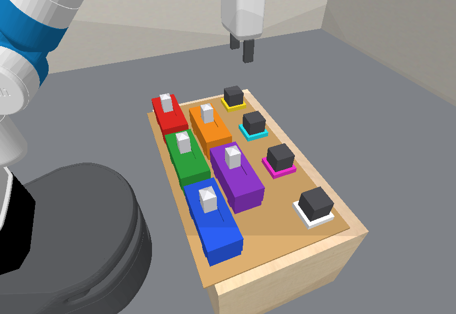
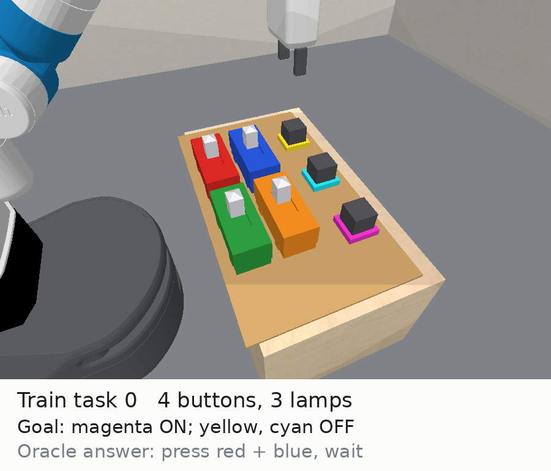
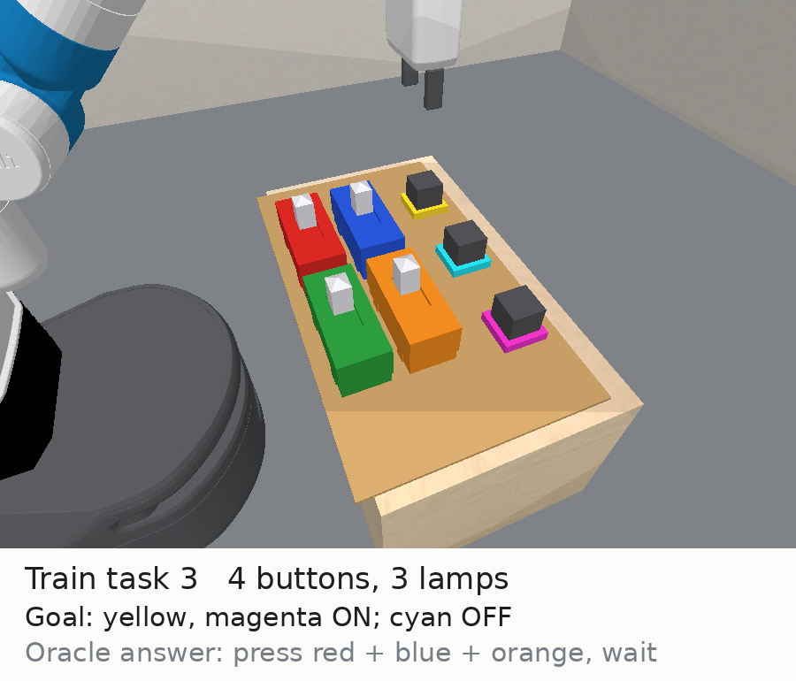
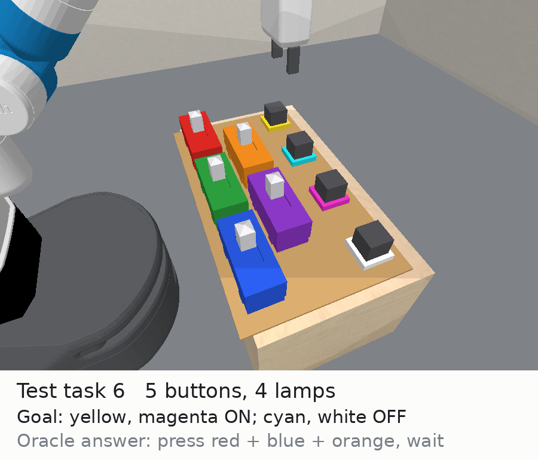
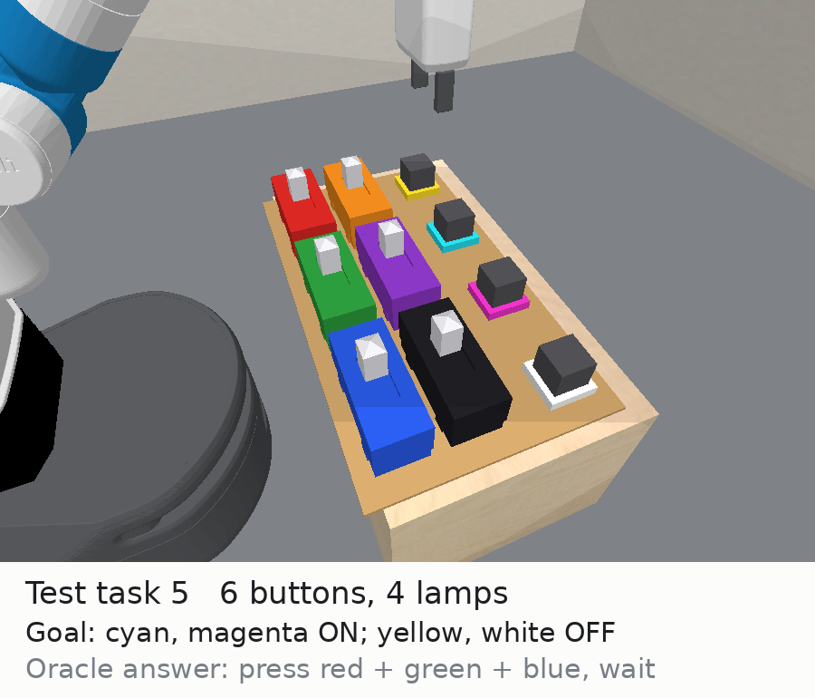
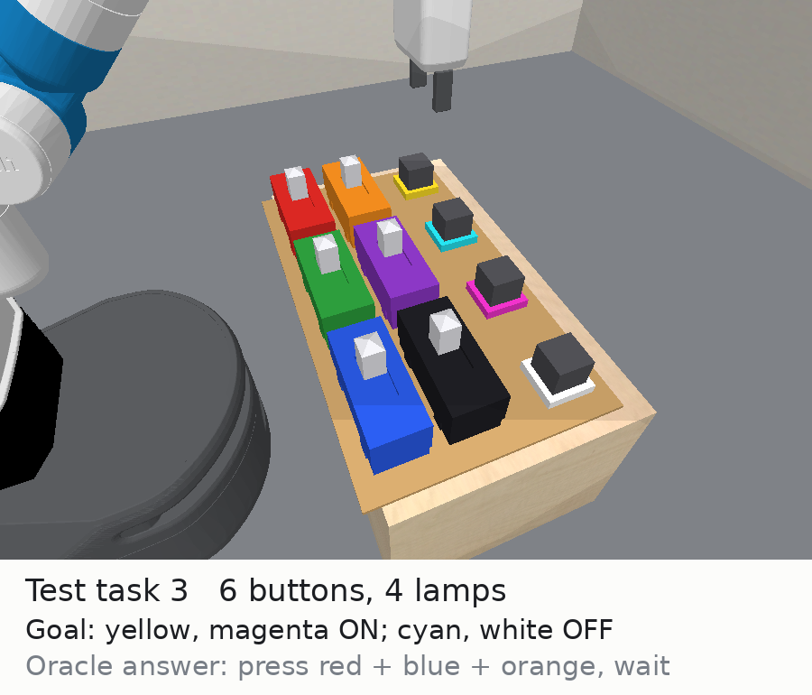

Buttons, lamps, and wiring the robot never sees
pybullet_busyboard - branch bridge-learning
Assets: docs/envs/busyboard/

color feature.
The red button is the same control on every board, so a rule can be stated as
"the yellow lamp needs the green button".| Lamp | Needs | Plain words |
|---|---|---|
| yellow (lamp0) | blue & orange | blue (button2) and orange (button3) both on |
| cyan (lamp1) | red & green | red (button0) and green (button1) both on |
| magenta (lamp2) | red & blue | red (button0) and blue (button2) both on |
| white (lamp3) | green & purple | green (button1) and purple (button4) both on |
Buttons are shared: blue sits in the yellow and magenta conditions, red in the cyan and magenta ones, green in the cyan and white ones. The white lamp is the one this board adds beyond the training board, so goals only ever ask for it to stay dark.
| Quantity | Value | Meaning |
|---|---|---|
| One button press | ~22 low-level steps | the unit of "time" the robot can spend |
| Charge gained per driven step | 0.017 | set by busyboard_charge_rate |
| Brightness starts rising at | charge 0.60 | ~36 driven steps, invisible until then |
LampOn becomes true at | brightness 0.50 (charge 0.80) | ~48 driven steps, about two presses later |
| Charge lost per undriven step | 0.050 | full to dark in ~20 steps, under one press |
Interlock. The orange button alone, then wait ten seconds: the yellow lamp's charge bar never moves. Add the blue button and the yellow lamp charges and lights.
Delayed credit. The blue and orange buttons are on, the yellow lamp is charging invisibly. The unrelated green button is pressed, and the yellow lamp lights during that press. The button that looks responsible is not.
Right-hand panel in each clip is experimenter-only: true wiring and latent charge. The red mark on each bar is where brightness begins.
busyboard_min_lit_test = 2):
two learned conditions composed, with any button they share held.
Training goals may ask for one.Latch everything and wait. Lights all four lamps. The yellow and white lamps were supposed to stay dark, so the task fails.
Objects and features
robot: x, y, z, fingers, roll, tilt, wristbutton: x, y, z, rot, color, is_onlamp: x, y, z, rot, color, brightness
(+ charge only when fully observable)color is an index into a named palette: buttons red, green, blue, orange, purple, black;
lamps yellow, cyan, magenta, white. Fixed per object on every board.Predicates (all visible to the agent)
ButtonOn(b), ButtonOff(b)LampOn(l), LampOff(l): brightness ≥ 0.5HandEmpty(r)Skills (shared factories, no board-specific motion code)
PressButton(r, b): push the slider to the on sideReleaseButton(r, b): push it backWait(r): hold stillPartially observable run (--partially_observable True)
charge feature is dropped. The agent sees only brightness
and has to postulate the accumulator itself.bubbling_level,
but here the latent sits behind an unknown wiring.| Buttons | Lamps | Conditions per lamp | Setting | |
|---|---|---|---|---|
| Train | 4 | 3 | 10 | busyboard_num_{buttons,lamps}_train |
| Test | 5 or 6 | 4 | 15 or 21 | busyboard_num_{buttons,lamps}_test |
busyboard_fixed_wiring = True), sampled over the largest board (6 buttons, 4 lamps)
under that contract and projected down by keeping the first lamps and folding new-button indices into the buttons a board has.busyboard_interlock_prob = 1.0), so every goal needs a combination of buttons.
Two lamps are never wired identically, so every lamp can be told apart by some experiment.busyboard_min_lit_test = 2); training goals may light one.init_4buttons_3lamps.png (train size),
init_5buttons_4lamps.png, init_6buttons_4lamps.png (test sizes).| Board | yellow needs | cyan needs | magenta needs | white needs | Decoys |
|---|---|---|---|---|---|
| Train 4 buttons, 3 lamps | blue & orange | red & green | red & blue | - | - |
| Test 5 buttons, 4 lamps | blue & orange | red & green | red & blue | green & purple | - |
| Test 6 buttons, 4 lamps | blue & orange | red & green | red & blue | green & purple | black |
busyboard_fixed_wiring = False) remains available as the harder setting,
where a synthesized policy would have to identify the board before acting.


Goals name lamps by colour; the oracle answer under each card reads the hidden wiring the agent never sees. A training answer is the answer for that lamp on every test board; a test goal composes two or three of them.


Purple feeds the white lamp, which is only ever a dark target, and black is a decoy, so leaving the unfamiliar buttons alone is always right.
Cards: task_<split>_<idx>.png, rendered with 6 train and 12 test tasks so every goal type shows up.
A goal is drawn uniformly from the assignments some button setting realizes, minus "nothing lit" and "everything lit". Only training lamps can be lit targets. Test goals need at least two lit.
| Split | Board | Realizable goals | 1 lamp lit | 2 lamps lit | 3 lamps lit |
|---|---|---|---|---|---|
| Train | 4 buttons, 3 lamps | 5 | 3 (60%) | 2 (40%) | 0 |
| Test | 5 buttons, 4 lamps | 3 | 0 | 2 (67%) | 1 (33%) |
| Test | 6 buttons, 4 lamps | 3 | 0 | 2 (67%) | 1 (33%) |
| Split | Goal | Buttons to hold |
|---|---|---|
| Train | yellow | blue, orange |
| cyan | red, green | |
| magenta | red, blue | |
| yellow + magenta | red, blue, orange | |
| cyan + magenta | red, green, blue | |
| Test | yellow + magenta (cyan, white dark) | red, blue, orange |
| cyan + magenta (yellow, white dark) | red, green, blue | |
| yellow + cyan + magenta (white dark) | red, green, blue, orange |
Yellow + cyan is never a goal: their conditions cover all four training buttons, which lights magenta too. Train has no three-lit goal because that would light every lamp; test has one, the new white lamp being its off-target. Sampled 120 tasks per split: train 75 / 45; test 91 / 29 across the two sizes. Regenerate with the render script, which prints both the sample and the exact shares.
busyboard_fixed_wiring = False.color feature makes that rule lifted again:
"the yellow lamp needs the green and blue buttons" is stated over features and is true on every board.| Buttons | Single | Pairs | Conditions per lamp | Distinct 3-lamp wirings | Distinct 4-lamp wirings |
|---|---|---|---|---|---|
| 4 (train) | 4 | 6 | 10 | 720 | 5040 |
| 5 (test) | 5 | 10 | 15 | 2730 | 32760 |
| 6 (test) | 6 | 15 | 21 | 7980 | 143640 |
SoleDriver(b, l) and JointDrivers(b1, b2, l).
They reconstruct the wiring from the board size, so the planner and the env cannot drift apart.LightLampSole, LightLampJoint (condition: all drive buttons on, held for the delay),
plus the matching darkening processes.PressButton, ReleaseButton, Wait.oracle_process_planning
and --sesame_check_expected_atoms False.Goal: cyan and magenta lamps lit, yellow and white lamps dark. Plan: press the red, green and blue buttons, then wait.
| Oracle | Learning agent | |
|---|---|---|
| Wiring | helper predicates + true params | nothing |
| Charge | true rule and rates | brightness only (PO); charge feature (FO) |
| Base simulator | - | the visible sim core, byte-identical to what its rollouts run
(pybullet_busyboard_base.py), on which no button lights anything |
| Predicates | Button/Lamp On/Off + helpers | Button/Lamp On/Off, HandEmpty |
| Skills | same three skills | |
offline_task_metrics, an experimenter-only channel,
so runs can score how much of the wiring an agent actually recovered.envs/all.yaml
and exp_busyboard.yaml.agent_oracle_hybrid_sim): should solve.
Its params carry the max-board wiring and project it onto any board, and it has already captured a Wait-based 5-step plan end to end.sim_predicator, agent_sim_learning): a model that gets the training wiring right
is right on every test board. What test adds is more buttons to ignore, a lamp to keep dark, and goals that need two conditions at once.
On the earlier 3/2 to 4-5/2-3 split, sim_predicator solved its test task from cycle 1 on (job 21869973).Held in reserve: busyboard_fixed_wiring = False draws a fresh wiring per episode.
That is the setting where a synthesized closed-loop policy would identify the board before committing, and it needs
the belief simulator to represent an unknown wiring, which nothing does yet.
# Oracle demo (solves 10/10)
python predicators/main.py --env pybullet_busyboard \
--approach oracle_process_planning --seed 0 \
--num_train_tasks 0 --num_test_tasks 10 \
--sesame_check_expected_atoms False
# Experiment sweep (oracle hybrid-sim arm; flip more arms' SKIP in the yaml)
python scripts/local/launch_simp.py -c predicatorv3/exp_busyboard.yaml --parallel
--partially_observable True to hide the charge feature.python predicators/envs/pybullet_busyboard.py (GUI, latches every button in turn).envs/pybullet_busyboard{,_base}.py,
ground_truth_models/busyboard/{predicates,options,processes,gt_simulator,gt_simulator_po}.py,
tests/envs/test_pybullet_busyboard.py.PYTHONPATH=. python docs/envs/busyboard/render_busyboard_media.py